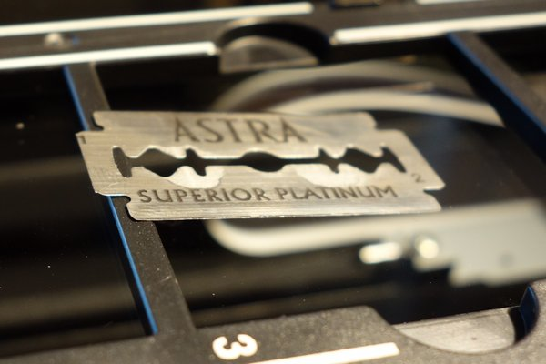
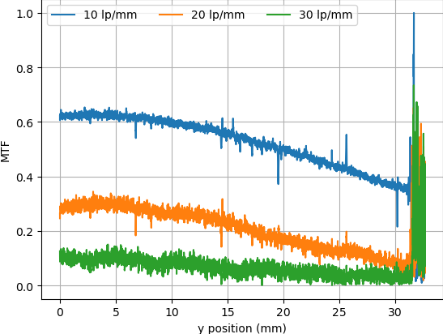

I have an Epson V550 perfection for scanning film which is barely adequate. It's just not sharp, noisy, and doesn't offer me the control I want. So I thought it would be fun to measure its modulation transfer function (MTF) and point spread function (PSF). If you're unfamiliar with what those are and how they're related, LenRentals has a great explanation with real world lens examples. If you find it interesting, I highly recommend checking out the rest of their blog too.
As mentioned in the LensRentals blog post, the MTF curve is just the Fourier transform of the PSF. I'll be measuring the PSF and using it to calculate the MTF curve. You can also use the PSF to model what image the scanner would produce, given a known, ideal input:
OUTPUT(x) = INPUT(x) ∗ PSF(x)Convolving your input with the PSF gives you your output. This also means if we know the input and output we can calculate the PSF.
Note: ∗ is convolution
Ideally, the input would be an ideal point source which is expressed mathematically as the dirac delta function δ(x). Convolving a function with δ(x) yields the same function (i.e. it is the identity transform), so if the input is δ(x) then the output would be the PSF. Unfortunately, real world ideal point sources are hard to come by. I could use a pinhole, but I'd need a way of measuring it's diameter which is also hard. In order to calculate the PSF I need a known input and in two dimensions that's just too hard.
So instead I'll just measure it in one dimension at a time. I still don't have an ideal point source, but you can get an ideal step function: a razorblade edge. The step function also has a handy property: it's derivative is δ(x). Combining that knowledge with the derivative of two convolved functions we can derive the PSF from just the scanned image of a razorblade edge:
OUTPUT(x) = STEP(x) ∗ PSF(x)Remember: this is only in one dimension; I'll be taking an individual column or row of an image and treating the data in that column/row as samples of the one dimensional OUTPUT(x) function.
Take the derivative of both sides
OUTPUT ' (x) = (STEP(x) ∗ PSF(x)) '
Use the derivative of convolved functions to simplify the right hand side
OUTPUT ' (x) = STEP ' (x) ∗ PSF(x)
Replace STEP'(x) with its derivative, δ(x)
OUTPUT ' (x) = δ(x) ∗ PSF(x)
Convolving a function with δ(x) is the identify transform
OUTPUT ' (x) = PSF(x)
So overall the procedure looks like this:
 The graph is "fuzzy" because I graphed the MTF for all rows of pixels crossing over the razor blade
edge. Any dust, noise, etc can cause the fuzziness.
The graph is "fuzzy" because I graphed the MTF for all rows of pixels crossing over the razor blade
edge. Any dust, noise, etc can cause the fuzziness.
 Looking at the two graphs, there doesn't seem to be much difference in either direction, so from now
on I'll just be running tests in the vertical direction.
Looking at the two graphs, there doesn't seem to be much difference in either direction, so from now
on I'll just be running tests in the vertical direction.
People commonly claim that the V550 film holders do not place the film at the proper height and that custom film holders can solve this problem. I put the razor blade in at an angle, resting on the edge of the slide holder so the height of the edge varied over distance. This allows me to see how the MTF changes with film height.
Then I graphed the MTF at three spatial resolutions (10, 20 and 30 lp/mm) vs the y coordinate the 1d slice of data came from. The noise on the right side of the graph is from where the blade was resting on the edge of the slide holder (4.2mm tall). I kept it in because it let me confirm which end of the graph was (nearly) against the glass (left) and which was significantly above it (right).
Height above the glass clearly has an effect on MTF, but the best position is about the same as the height the razor blade sits at in the slide holder. I don't think there's much to be gained by buying custom holders unless your film is curling/bowing up significantly. Then again, this could vary unit to unit.
In a word: No.
VueScan offers the option to auto focus while the SANE API (Linux scanning API) does not report capability. I wondered if it actually does anything. Initially I was thrown off because VueScan was applying curves to the image. When doing MTF tests it's important to not do any nonlinear processing on the image which includes applying curves. I didn't realize this at first and the curves ended up increasing the MTF a bit. This led me down a wild goose chase with me eventually confirming that the autofocus button does not change the commands sent to the scanner in any way. I'll write a follow up to this post with the details later. After spending a couple days doing that I stumbled on the "save raw" button and confirmed that the raw scans from VueScan are in fact no sharper than using the SANE API.
There are several things I still want to investigate: